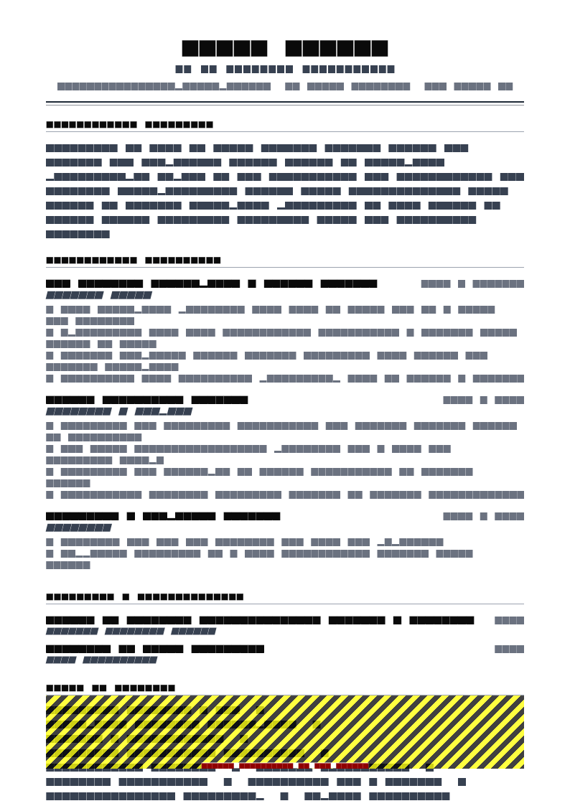

What actually gets screened
Finance recruitment filters hard and early, on three things.
Qualification. ACCA, ACA, CIMA, CPA, CA or equivalent, plus status — qualified, part-qualified with a specific number of papers left, or qualified by experience. This is frequently a hard filter, so it belongs above your employment history rather than at the bottom next to your degree.
Systems. The ERP and ledger you have worked in is a real cost consideration: an accountant who already knows SAP or NetSuite is productive in weeks rather than months. Recruiters search for platform names directly.
Scale. This is the one candidates skip, and it is what actually distinguishes them. “Prepared monthly management accounts” could describe a sole trader’s bookkeeper or the group accountant of a £200M business. Nobody can place you without the numbers.
Qualification and status directly under your summary. Every role labelled with turnover, entities, currencies and team size. Bullets built on close cycles, controls, audit outcomes and reconciliations. Systems named with module-level detail. Two pages, single column.
Section order
- Contact
- Summary — qualification, years, function, scale, one result
- Professional qualifications — body, year, status
- Experience — each role with a scale descriptor, then bullets
- Systems & technical skills
- Education
- CPD, memberships — brief
Qualifications and status
- ACCA — Association of Chartered Certified Accountants, qualified 2019, member in good standing
- IFRS Certificate — ACCA, 2022
- Advanced Excel & Financial Modelling — CFI, 2023
Be exact about status. “Studying towards CIMA” is vague enough to be read pessimistically; “CIMA Strategic level, 2 papers remaining, next sitting 11/2026” is a fact a recruiter can plan around. If you are qualified by experience with no letters, say so plainly — it is common and respected in industry roles, and leaving the section blank invites a worse assumption.
For international applications, name the jurisdiction: a CPA licence is state-specific, and a CA qualification differs materially between India, Australia and South Africa. Note any reciprocity or conversion in progress.
The summary
Generic
Detail-oriented and highly organised accountant with strong analytical skills and a proven track record of accuracy, seeking a challenging role in a dynamic finance team.
Specific
Qualified accountant (ACCA, 2019) with 8 years in group reporting for a multi-entity manufacturer, consolidating 14 legal entities across 4 currencies on a £60M turnover. Reduced monthly close from 11 working days to 5. SAP S/4HANA and Power BI.
“Detail-oriented” and “accurate” are the baseline expectations of the entire profession — an accountant who is not accurate is not an accountant. Spend the words on scale and systems instead.
Showing scale
Add a one-line descriptor under each role, before the bullets. This is the highest-information sentence on the page.
Group Financial Accountant — Halden Manufacturing Group, Birmingham · 04/2021 – Present
£60M turnover, 14 legal entities, 4 currencies (GBP, EUR, USD, PLN). Finance team of 11; reporting to the Group Financial Controller. SAP S/4HANA, Power BI. Big Four audit.
- Reduced monthly close from 11 working days to 5 by moving 9 manual journals into recurring templates and parallelising intercompany reconciliation.
- Eliminated a recurring £400k of unmatched intercompany balances by rebuilding the reconciliation process in SAP with a monthly matching control.
- Led first-time adoption of IFRS 16 across all 14 entities, delivering an unqualified audit opinion with zero adjustments.
Include what applies: group or entity turnover, number of legal entities, currencies, consolidation scope, transaction or invoice volume, ledger and headcount size, finance team size, who you reported to, audit firm tier, and whether the environment was listed, private-equity backed, regulated or public sector.
Close, audit and control bullets
Every accountant posts journals and prepares reconciliations. What distinguishes you is a cycle you shortened, a control you built, or an audit outcome you owned.
Duty
Responsible for preparing monthly management accounts, posting journals and assisting with the annual audit process.
Achievement
Cut the management accounts pack from 14 to 6 working days by automating three revenue schedules in Power Query, and cleared 100% of audit requests within the agreed 5-day turnaround for two consecutive years.
Duty
Handled accounts payable processing and supplier queries for the group.
Achievement
Processed 2,400 invoices a month across 380 suppliers, introducing a three-way match check that cut duplicate payments from 11 to 1 per quarter and recovered £38k of historic overpayments.


The finance metric menu
| Dimension | What to cite |
|---|---|
| Close cycle | Working days to close, days reduced, journals automated, first-time-right rate, reporting deadline met |
| Audit | Opinion type, number of adjustments, control findings raised and closed, PBC turnaround, management letter points |
| Controls & reconciliation | Unreconciled balances eliminated, aged items cleared, duplicate payments prevented, segregation-of-duties gaps closed, SOX controls tested |
| Working capital | DSO, DPO, inventory days, bad debt written off, collections improvement, cash forecast accuracy |
| Volume | Invoices, payments, expense claims, payroll headcount, ledger lines, entities, currencies |
| Automation | Hours saved per cycle, manual journals removed, reports retired, spreadsheets replaced by system reports |
| Compliance | Filings submitted on time, VAT or GST returns, transfer pricing documentation, statutory accounts prepared |
Close-cycle reduction is the most universally recognised achievement in the profession — every hiring manager in finance understands what it costs to shorten a close. If you have done it, put it in the summary.
Systems keywords
- ERP: SAP S/4HANA (FI/CO, intercompany, fixed assets), Oracle NetSuite, Microsoft Dynamics 365
- Consolidation & reporting: OneStream, Hyperion, Power BI (DAX), Cognos
- Ledger & SME: Xero, QuickBooks Online, Sage 50 and 200
- Excel: Power Query, PivotTables, SUMIFS/INDEX-MATCH, three-statement modelling, macro maintenance
- Standards: IFRS (15, 16, 9), UK GAAP FRS 102, US GAAP exposure
- Tax & compliance: VAT returns, MTD submissions, corporation tax packs, transfer pricing documentation
- Other: SQL (basic queries for ledger extracts), Concur, Coupa, Blackline
Module-level detail matters. “SAP” is a category; “SAP S/4HANA (FI/CO, intercompany, fixed assets)” is a claim a hiring manager can evaluate. Spell out standards with their numbers, since recruiters search for “IFRS 16” specifically. More lists in resume skills.
From AP clerk to financial controller
| Role | Foreground | Typical bullet shape |
|---|---|---|
| AP / AR clerk | Volume, accuracy, query turnaround, aged debt | Processed 2,400 invoices a month across 380 suppliers with a 99.6% first-time match rate. |
| Assistant accountant | Close contribution, reconciliations owned, systems | Owned 14 balance sheet reconciliations within a 5-day close, clearing a 9-month aged items backlog. |
| Management accountant | Reporting pack, variance analysis, budget holders supported | Produced the monthly pack for 6 cost centres and ran variance reviews that identified £120k of recoverable overspend. |
| Financial accountant | Statutory accounts, audit, technical standards | Prepared statutory accounts for 5 entities under FRS 102 with no audit adjustments for three consecutive years. |
| Group / consolidation accountant | Entities, currencies, elimination, group audit | Consolidated 14 entities across 4 currencies, cutting group reporting from 8 to 4 days. |
| FP&A analyst | Forecast accuracy, modelling, commercial partnering | Owned the rolling 13-week cash forecast; mean absolute error fell from 11% to 4%. |
| Financial controller | Team, control environment, board reporting, systems change | Led a finance team of 11 through an ERP migration with no missed statutory deadline. |
| Audit → industry move | Client portfolio scale, sectors, technical depth | Led audit fieldwork on 9 clients from £5M to £140M turnover across manufacturing and retail. |
If you are moving from practice into industry, translate deliberately: client portfolios become sector experience, audit files become technical standards depth, and busy-season delivery becomes deadline reliability. The method is in career change resume.
Part-qualified and studying
A large share of accounting applicants are mid-qualification, and the resume question is how to present that without ambiguity. Be precise on three points: which body, which level and how many papers remain, and your next sitting date. Add whether your current employer supports study, since it tells a recruiter what package expectation to plan for.
Then lead the rest of the resume on volume and reliability rather than technical judgement. At part-qualified level, hiring managers are buying throughput and accuracy: invoices processed, reconciliations owned, deadlines hit, backlogs cleared. Those are all quantifiable, and they compete well against a marginally more qualified candidate with no numbers.
Templates

Legal & Compliance resume template
Legal & Compliance is designed for credential-heavy professional histories: formal, restrained, with the qualification block sitting above experience where finance recruiters look first. ATS 92.
Use this template in NextCV| Template | ATS score | Price | Best for |
|---|---|---|---|
| Legal & Compliance | 92 | Premium | Qualified accountants and finance professionals — formal and credential-first |
| ATS Pro | 98 | Free | Large employer and shared-service centre portals |
| Corporate Blue | 88 | Premium | Corporate finance and financial services histories |
| Pure White | 95 | Free | Controllers and finance directors wanting restraint |
| Graduate ATS | 92 | Premium | Graduate and part-qualified applicants on one page |
Checklist
- Qualification, body, year and status directly under the summary
- Part-qualified status stated with papers remaining and next sitting
- Every role carries turnover, entities, currencies and team size
- Close-cycle metric present if you have one
- Audit outcome stated: opinion, adjustments, findings closed
- Volume figures for transactional roles
- ERP named with module-level detail
- Accounting standards spelled out with their numbers
- Automation or hours-saved figure included
- Two pages, single column, text-based PDF
- No confidential figures your employer would not publish
Frequently asked questions
What should an accountant resume include?
Qualification and status near the top, then a summary naming your scale, then experience bullets built around close cycles, controls and audit outcomes, then systems, then education. Two pages for a qualified accountant.
The two things most candidates omit are scale (entities consolidated, turnover, transaction volume, headcount of the finance team) and systems specificity, both of which are heavily screened.
Where do accounting qualifications go on a resume?
High — immediately after the summary, before experience. ACCA, ACA, CIMA, CPA and CA are screening criteria, and recruiters filter on them.
Give the body, the year of qualification, and your current status. If you are part-qualified, say exactly how many papers remain and when you sit the next one; vagueness here is read unfavourably.
How do I show scale on an accounting resume?
Name the numbers that describe the environment, not just your tasks: group turnover, number of legal entities consolidated, currencies, transaction volume, ledger size, finance team headcount and who you reported to.
“Consolidating 14 legal entities across 4 currencies for a £60M turnover group” tells a hiring manager more about your capability than any list of duties.
What metrics matter on an accountant resume?
Close cycle length and how you shortened it, audit outcomes and adjustment counts, reconciliation variances eliminated, control findings closed, forecast accuracy, DSO or DPO movement, and automation hours saved.
Close-cycle reduction is the single most recognisable achievement in the profession: “reduced monthly close from 11 working days to 5” is understood instantly by anyone hiring.
Should I list accounting software on my resume?
Yes, specifically and by name. ERP and ledger experience is a genuine keyword filter, because onboarding cost differs enormously between someone who knows the system and someone who does not.
Name the platform and the modules or depth — “SAP S/4HANA (FI/CO, intercompany, fixed assets)” rather than just “SAP”. Include the reporting and consolidation tools too.
How long should an accountant resume be?
Two pages for a qualified accountant with several roles; one page for a part-qualified or entry-level candidate. Finance is a field where two pages is normal, because qualifications, systems, entity scale and audit history all need space.
Keep older roles to one or two bullets and give your current role three to five. Do not compress to one page by shrinking type.
NextCV Editorial
NextCV is an AI resume builder by Empire Softtech. We publish the same guidance our in-app ATS analyser is built on — seven weighted sections, 29 templates scored from 72 to 98, and no formatting advice we would not follow ourselves.